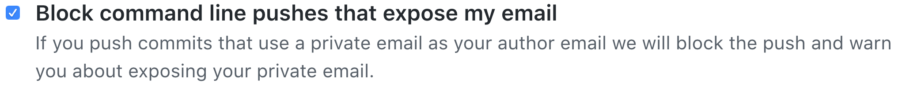
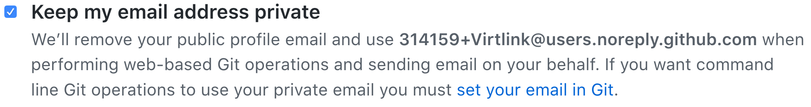

Meaning of the GitHub message: push declined due to email privacy restrictions
I have accepted and merged a pull request on GitHub, and now I cannot pull my commits any more.
The message is:
! [remote rejected] master -> master (push declined due to email privacy restrictions) error: failed to push some refs to 'git@github.com:FranckFreiburger/vue-resize-sensor.git' git did not exit cleanly (exit code 1) (3838 ms @ 12/04/2017 21:23:11)
What should I do now?
Answer
The remote repository has been configured to disallow you pushing a commit that would reveal your personal e-mail address. For example in GitHub you have checked the Block command line pushes that expose my email checkbox to enable this.

While you can of course uncheck that setting, it will expose your private e-mail address to everyone in the world, as author information is readable by anyone with access to your repository.
Instead, do this:
-
You can see your personal e-mail address, which is used by default for your commits in Git:
git config --global user.email
-
Find your GitHub noreply address in your GitHub's Personal Settings → Emails. It's mentioned in the description of the Keep my email address private checkbox. Usually, it starts with a unique identifier, plus your username:
{ID}+{username}@users.noreply.github.com

-
Change the global user e-mail address setting to be your GitHub noreply address:
git config --global user.email {ID}+{username}@users.noreply.github.com
-
Reset the author information on your last commit:
git commit --amend --reset-author
If you have multiple commits with your private e-mail address, see this answer.
- Now you can push the commit with the noreply e-mail address, and future commits will have the noreply e-mail address as well.
git push
Suggest
This is likely caused by a new GitHub setting that blocks command line pushes that expose your email address.
Try unchecking the "Block command line pushes that expose my email" box in your email settings and then pushing again.